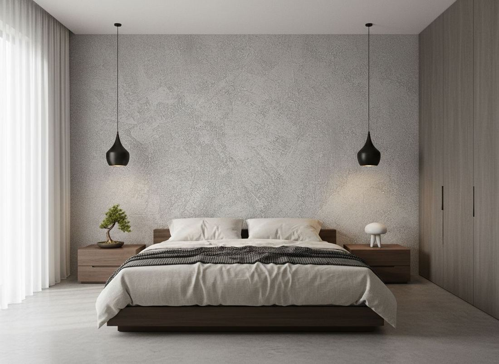
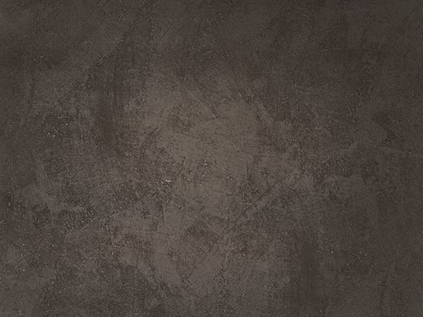
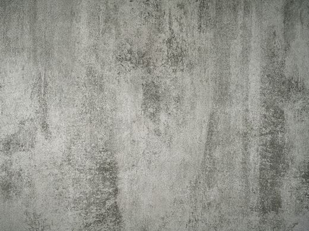
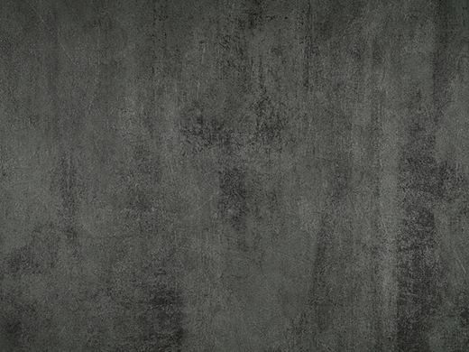

CR200
Soft Grey Texture Concrete Interior Film
Soft grey texture concrete interior film with a smooth industrial cement look. Ideal for offices, feature walls, and contemporary spaces.
Roll size 1.23m x 50 m
KOINTEC 27/28 · 9 finishes
KOINTEC concrete interior film recreates raw, textured and painted concrete on walls, columns, counters and furniture, with none of the weight, dust or curing time of a real screed. This page lists every concrete finish in the KOINTEC 27/28 catalogue with its code: Texture Concrete for tactile industrial surfaces and Premium Painted Concrete for smoother, coloured looks. Use it to shortlist finishes for offices, restaurants and residential projects.




It is a self-adhesive architectural film, made in Korea, that gives existing surfaces such as cabinets, doors, walls and furniture a concrete finish without replacing them.
9 finishes across Texture Concrete, Premium Painted Concrete. Each one is listed on this page with its product code.
From XESS Trading LLC in Al Quoz, Dubai, the authorized KOINTEC distributor in the UAE since 2016, through interiorfilm.com. We also supply Saudi Arabia and Qatar.
Send the product codes you like to our team through the contact page on interiorfilm.com, by WhatsApp on +971 55 217 8882 or by email to info@xesstrading.com.